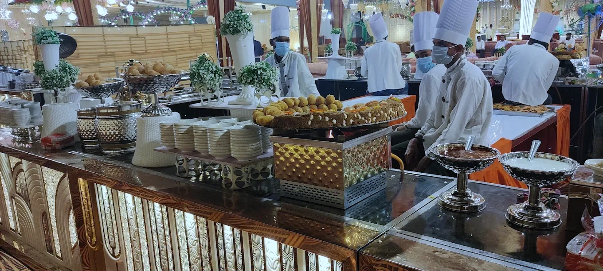
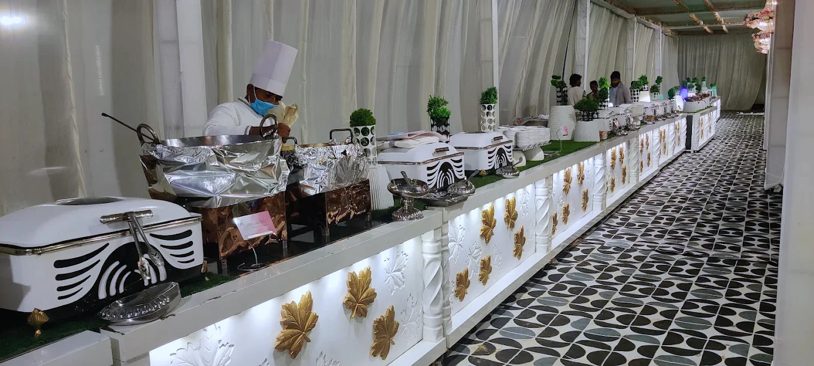
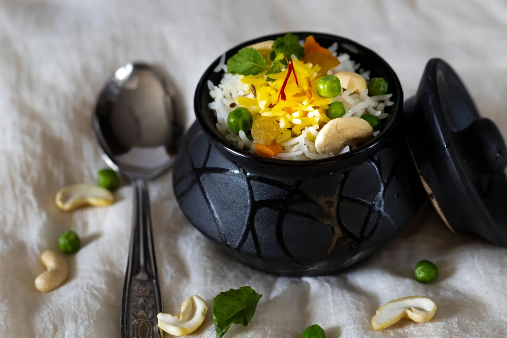
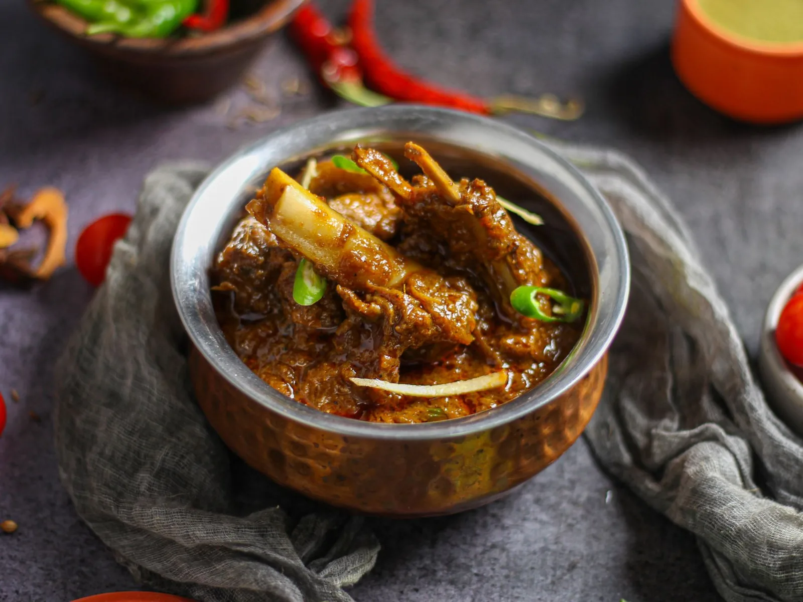
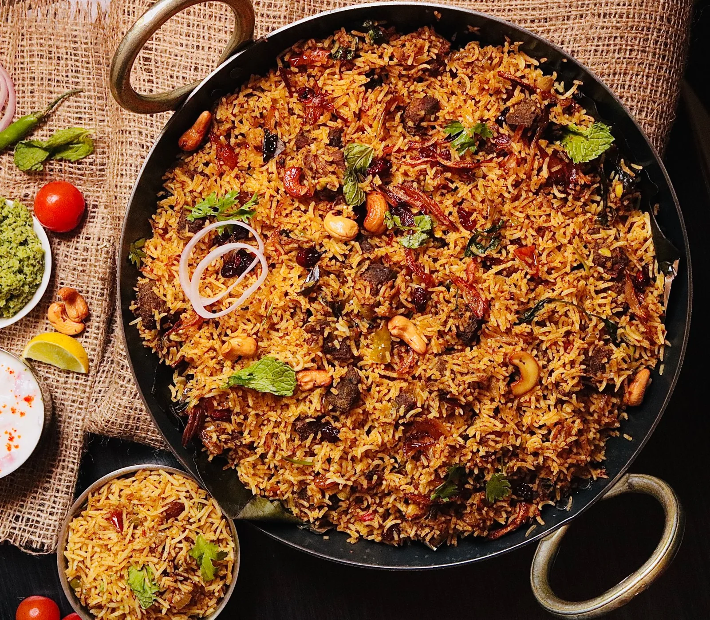
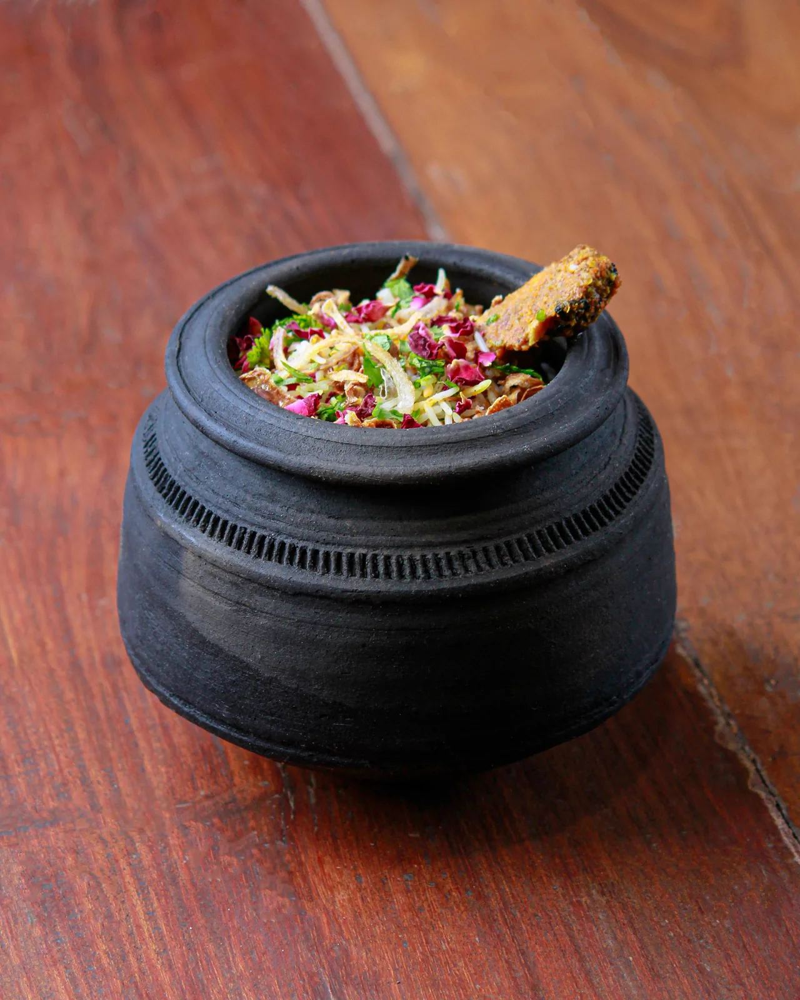

Not just catering. An experience your guests remember.

A city famous for its food and its hospitality — we are its quiet custodians.
Lucknow has always known how to host. Beneath the tents, around the deghs, at every table, there is a way of doing things that no haste can teach. For three decades we have been the unseen hand behind the city's most cherished celebrations — weddings, institutional gatherings, and private evenings where the food must speak for itself.
Our promise is simple: one standard, never lowered.
"Anywhere can make food cheaper. It takes discipline to keep making it right — and that is the only trade we understand."
The market around us races toward shortcuts — cheaper spice, rushed stock, mass reheating. We built our name on the opposite instinct. When guests tell us the flavours taste like home, they are tasting the difference between convenience and craft.
Best Mughlai is not made fast. It is made patiently, from the best things.




Best Mughlai is made when the process is honoured and the ingredients are the finest. Whole spices from the best vendors across India — patthar ka phool, cinnamon, green elaichi — simmered low and long, never compromised.

Tehzeeb, in every gesture.


Trained to anticipate. Present without intruding. Every guest treated like family — because in Lucknow, they are.
Before a single plate is served, the table is dressed. Fine crockery, proper cutlery, and counters arranged with care — because presentation is part of the taste.


We set the table the way we cook — with care and consistency. Bone-china plates, stemware chosen for the occasion, and cutlery kept polished and weighted. The food looks the way it tastes: considered, from the first spoon to the last plate.

Our events range from intimate 50-guest dinners to grand celebrations of up to 3,500 people.
"Our guests are still talking about the food months later. You don't just taste it — you remember it. That's the FM difference."
Tell us about your wedding, institutional event, or private celebration. We'll take it from there.